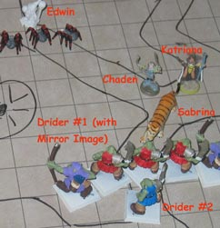
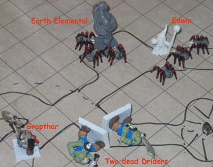

The second and third corridors proved more fruitful, broadening into a series of chambers inhabited by driders.
Driders retain their Drow abilities, including a substantial resistance to magic. Nearly all Driders are spellcasters, as Drow without magic rarely attract enough interest from Lolth to undergo her test.
Round 1
The party continued to prepare magical defenses. Edwin cast Haste, which affects the entire party. Katriana cast Hide from Animals on the party, thinking to avoid notice by the giant spiders. Grapthar cast Magic Circle Against Evil, while Chaden cast Accuracy on her bow.
Round 2
There being no sign of attack from the Driders, the party continued to prepare. Edwin cast Stoneskin. Chaden cast True Strike and moved silently to location "E" but found no spiders there. Katriana cast Barkskin, which also affected her animal companion Sabrina. Grapthar cast Bless.
Round 3
The Arcane Eye, with impeccably bad timing, reached the end of its duration. Edwin moved down the hall toward location "A" while conjuring another one. Chaden listened for movement down the far corridor, but heard nothing. Katriana cast Resistance, which was also shared with Sabrina. Grapthar cast Detect Evil, to try to fix the location of the foes.
Round 4
Our heroes began to realize that the Driders would not be making the first move. Edwin crept back up the hall to the forked passage while moving the Arcane Eye to "C." There were two Driders and one giant spider there.
Chaden crept down the hallway just past location "E," but still heard no movement. Katriana, abruptly deciding to take the fight to the enemy, cast Summon Nature's Ally to conjure a large earth elemental which immediately moved to attack the two Driders, badly wounding one. Three giant spiders which suddenly appeared between the Driders, all of which attacked the elemental. Grapthar charged down the corridor to location "A" while casting Silence near the earth elemental and Driders, to disrupt spellcasting. However, Grapthar felt his armor becoming uncomfortably warm.
Round 5

Edwin, making good use of his Small size category, squeezed past the rest of the party to the edge of location "A" again. He cast Spell Enhancer followed by an Arc of Lightning between the two Driders at the end of the corridor. One Drider was killed and the other hurt, but the three giant spiders were unaffected. Edwin thought they were probably Phase Spiders, protecting themselves by blinking to the Ethereal plane. Grapthar rushed down the corridor, killing the other Drider. He took minor damage from his scorching hot armor, obviously the target of a Heat Metal spell. Three spiders materialized next to Edwin, but their mandibles could not penetrate the Stoneskin. The other three spiders attacked the elemental, which counterattacked one spider.
Chaden, hearing the combat start, moved back towards the rest of the party just in time. Two Driders had crept up the hallway behind her, one bearing a Mirror Image spell. She was attacked from behind with a cold spell. Sabrina charged the front Drider but missed completely. Katriana cast Call Lightning on the creature which attacked Chaden, but the creature's spell resistance protected it. That Drider cast Chain Missile, a powerful Magic Missile which hit Chaden, Edwin, Sabrina, and Katriana.
